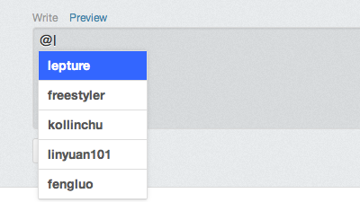
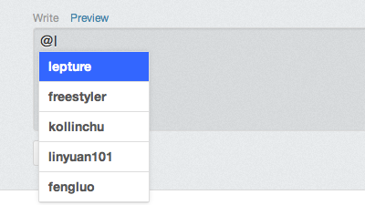

What is
At.js is what you can guess from the picture bellow.


At.js is what you can guess from the picture bellow.

Hi, type @ for a try!
Actually it's not just a mention, there are more waiting for you! Type : and have fun!
It is just designed to do the twitter-like mention job, however you can do whatever you want!
For example, Type : to complete emoji as I mentioned above.
The only limitation is your imagination.
Here is the basic usage:
var names = ["Jacob","Isabella","Ethan","Emma"];
var emojis = ["smile", "heart"];
$('textarea').atWho('@', {
data: names
}).atWho(':', {
data: emojis
});
Check the script of this demo to learn how to use template.
Find more on the Wiki Sites
And if you are using At.js , please add your site to this wiki